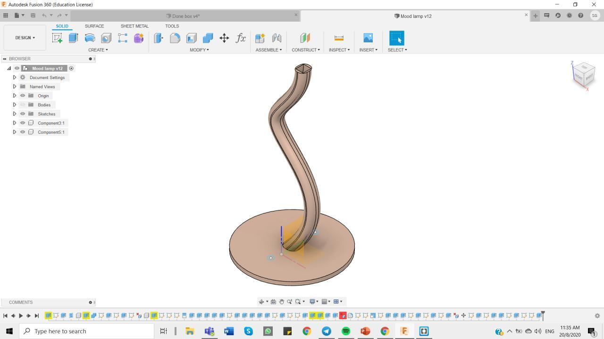

Idea
For my final project, I want to do something that is pratical for me to use and it cute which suits my personality. I plan to make a heart mood lamp which is 2-in-1. A study lamp and a mood lamp by itself. The mood lamp can be used as light therapy when I'm studying. It can encourage me to study by looking at the pretty colours on the lamp :)
Sketches
I came out with 2 designs for the lamp however my final pick would be the heart mood lamp because it suits me more <3 even though the balloon design i cute as well. The base of mood lamp would be made using laser cutting while the lamp and "string" would be made using 3D printing. Therefore, I would incoperate what i had learnt through this module.
Materials Needed
1. Arduino UNO
2. NeoPixel
3. Scissors
4. Wires
5. Breadboard
6. Switch button
7.
On fusion360
This is what the final lamp will look like!
Different parts to be printed seperately
